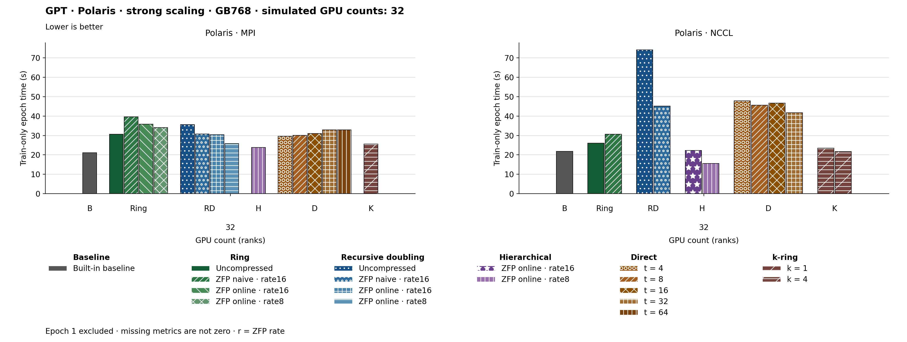

The figure uses bars. Families and methods are identified by text and patterns in addition to color. The metric is Train-only epoch time (s). Polaris · MPI, GPU count (ranks) 32: Built-in baseline has the lowest plotted value, 21.100. Polaris · NCCL, GPU count (ranks) 32: Hierarchical · ZFP online · rate8 has the lowest plotted value, 15.530. Epoch 1 is excluded. Values are medians; when repeated runs are available the selected repeat policy is median. These are not confidence intervals across repeated jobs. Missing or unrecorded metrics are omitted, not set to zero.
| Panel | GPU count (ranks) | Method | Value | Runs |
|---|---|---|---|---|
| Polaris · MPI | 32 | none | 21.1 | 1 |
| Polaris · MPI | 32 | direct_t16 | 30.95 | 1 |
| Polaris · MPI | 32 | direct_t32 | 32.91 | 1 |
| Polaris · MPI | 32 | direct_t4 | 29.54 | 1 |
| Polaris · MPI | 32 | direct_t64 | 32.86 | 1 |
| Polaris · MPI | 32 | direct_t8 | 30.06 | 1 |
| Polaris · MPI | 32 | hierarchical_zfp_online_coll:8 | 23.77 | 1 |
| Polaris · MPI | 32 | kring_k4 | 25.55 | 1 |
| Polaris · MPI | 32 | recursive_doubling | 35.63 | 1 |
| Polaris · MPI | 32 | recursive_doubling_zfp_naive:16 | 30.77 | 1 |
| Polaris · MPI | 32 | recursive_doubling_zfp_online_coll:16 | 30.43 | 1 |
| Polaris · MPI | 32 | recursive_doubling_zfp_online_coll:8 | 25.79 | 1 |
| Polaris · MPI | 32 | ring | 30.61 | 1 |
| Polaris · MPI | 32 | ring_zfp_naive:16 | 39.6 | 1 |
| Polaris · MPI | 32 | ring_zfp_online_coll:16 | 35.8 | 1 |
| Polaris · MPI | 32 | ring_zfp_online_coll:8 | 34.09 | 1 |
| Polaris · NCCL | 32 | none | 21.81 | 1 |
| Polaris · NCCL | 32 | ring | 26.03 | 1 |
| Polaris · NCCL | 32 | ring_zfp_naive:16 | 30.63 | 1 |
| Polaris · NCCL | 32 | hierarchical_zfp_online_coll:16 | 22.33 | 1 |
| Polaris · NCCL | 32 | hierarchical_zfp_online_coll:8 | 15.53 | 1 |
| Polaris · NCCL | 32 | recursive_doubling | 74.1 | 1 |
| Polaris · NCCL | 32 | recursive_doubling_zfp_naive:16 | 45.15 | 1 |
| Polaris · NCCL | 32 | direct_t4 | 47.89 | 1 |
| Polaris · NCCL | 32 | direct_t8 | 45.59 | 1 |
| Polaris · NCCL | 32 | direct_t16 | 46.74 | 1 |
| Polaris · NCCL | 32 | direct_t32 | 41.78 | 1 |
| Polaris · NCCL | 32 | kring_k1 | 23.48 | 1 |
| Polaris · NCCL | 32 | kring_k4 | 21.64 | 1 |